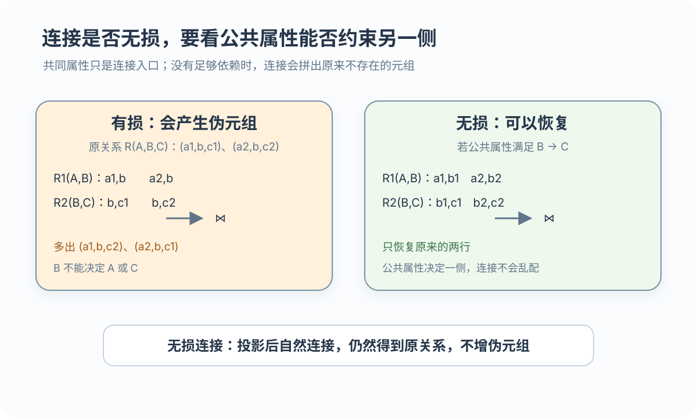

推出依赖
Y ⊆ X_F+ ⇒ F ⊨ X→Y
分表以后，原规则还能检查吗？连接回来会不会多出原本不存在的记录？
 VER. 2608
Built with impress.js
VER. 2608
Built with impress.js
用计算回答：依赖能否推出、约束能否在子表检查、连接是否产生伪元组
例如 Sno→School 且 School→Mname，用传递律可推出 Sno→Mname
| 公理 | 形式 | 直观含义 |
|---|---|---|
| 自反律 | Y ⊆ X 则 X → Y | 已有属性决定其子集 |
| 增广律 | X → Y 则 XZ → YZ | 两端共同增加上下文 |
| 传递律 | X → Y 且 Y → Z，则 X → Z | 依赖链可以传递 |
、B→C ⇒ A→C（传递律） 派生规则：合并 X→Y、X→Z⇒X→YZ；分解 X→YZ⇒X→Y；伪传递 X→Y、WY→Z⇒XW→Z`Armstrong 公理具有有效性和完备性：按规则推出的依赖成立，所有由 F 逻辑蕴涵的函数依赖也都能推出
反复应用左部已在集合中的依赖，直到不再变化；先判超码，再查真子集
01
02
03
04
05
06
07U = {A, B, C, D, E}
F = {AB→C, B→D, C→E}
A+ = A
B+ = BD
AB+：
AB → ABCD （AB→C、B→D）
ABCD → ABCDE （C→E）Y ⊆ X_F+ ⇒ F ⊨ X→Y
X_F+ = U ⇒ X 是超码
X 是超码，且真子集都不是超码
最小覆盖与原依赖集闭包相同；右部为单属性，删去冗余依赖和左部多余属性
把每条依赖的右部拆成一个属性
删除后依赖集闭包不改变的规则
若删掉左部某属性后仍能推出右部，就删除这个多余属性
。微例：A→BC 先拆成 A→B、A→C；若 A→C` 可由其他依赖推出，就删除它不同处理顺序可能得到多个等价的最小依赖集
子表要覆盖原表属性；还要检查依赖能否在子表执行、连接是否产生伪元组
Fi 是 F+ 在 Ui 上的投影，不是只把原依赖按列筛一遍；每张子表实际能检查的依赖要从闭包中求出
分解后的局部依赖闭包应与原依赖闭包等价
| 检查对象 | 需要回答 | 实际影响 |
|---|---|---|
| 原依赖集 | 哪些规则必须保持 | 原表中的业务规则 |
| 局部依赖集 | 哪些规则能在子表检查 | 写入时是否必须先连接多表 |
| 闭包比较 | 两者是否等价 | 判断保持依赖 |
R(Sno,School,Mname) 分解为 (Sno,School) 与 (Sno,Mname) 后，`School→Mname` 不能由局部依赖保持先最小化依赖，再按相同左部组织关系
X ∪ {A...} 形成局部关系算法 6.2 保证 3NF 与依赖保持；若还要求无损连接，算法 6.4 还需补入包含候选码的关系并进行检验
学生与课程若拼出原表没有的记录，就是伪元组；所有满足 F 的关系都须无损

r → πR1(r)、πR2(r) → πR1(r) ⋈ πR2(r)；二元例 R1(A,B)、R2(B,C) 共享 B。无损时 mρ(r)=πR1(r)⋈...⋈πRk(r)=r；r⊆mρ(r) 总成立，关键是不多出伪元组
依赖保持避免写入时跨表检查；无损连接避免查询多出伪元组，两项分别证明
| 准则 | 满足时意味着什么 | 怎样判断 |
|---|---|---|
| 依赖保持 | 原依赖可由局部依赖推出并检查 | 依赖闭包 |
| 无损连接 | 投影自然连接恢复原关系且无伪元组 | 投影与自然连接 |
| 两者同时 | 约束可局部检查，数据可无伪恢复 | 两种证明都通过 |
无损不保证依赖保持，依赖保持也不保证无损
| 反例 | 分解 | 失去哪一项 |
|---|---|---|
R1(学号,姓名)、R2(课程号,课程名) | 无公共属性，连接退化为笛卡儿积 | 保持依赖但有损 |
(Sno,School)、(Sno,Mname) | Sno→School 可支持无损，但 School→Mname 不在局部 | 无损但不保持依赖 |
先把依赖拆成单属性右部；行对应子关系，列对应属性
01
02
03
04
05
06
07
08
09
10U={A,B,C,D,E} F={AB→C, C→D, D→E}
ρ={R1(A,B,C), R2(C,D), R3(D,E)}
初始表： A B C D E
R1 a1 a2 a3 b14 b15
R2 b21 b22 a3 a4 b25
R3 b31 b32 b33 a4 a5
C→D：R1 的 D 改为 a4；D→E：R1、R2 的 E 改为 a5
R1 a1 a2 a3 a4 a5反复传播函数依赖，直到出现全 a 行或表格稳定
a 符号，其余填 b 符号a 判无损；稳定后仍没有全 a 行判有损先决定不能接受跨表检查、伪元组还是较低范式，再选择算法
| 算法 | 保证与适用 | 可能代价 |
|---|---|---|
| 3NF 合成 6.2 | 3NF、保持函数依赖 | 不自动保证无损连接 |
| 补码关系 6.4 | 在 6.2 结果上同时获得无损与保持依赖 | 关系集合可能增加 |
| BCNF 分解 6.5 | 无损连接、达到 BCNF | 不一定保持函数依赖 |
| 4NF 分解 6.6 | 无损处理非平凡多值依赖 | 不承诺保持所有函数依赖 |
拆成多表不代表正确；需展示依赖推导、局部依赖闭包、无损判据或追赶表
逐步求 AB+，再检查 A、B 等真子集；最小覆盖要说明拆右部、删冗余和约简左部的依据
列出各 Fi 的投影并比较 (F1∪…∪Fk)+ 与 F+；只说“子表各有约束”不足以证明
用二元判据或追赶表证明自然连接不产生伪元组；追赶表应展示依赖传播直到全 a 行或稳定
若不能同时满足，要明确当前系统更不能接受写入时跨表检查、查询多出伪元组，还是保留较低范式
F={AB→C,B→D,C→E} 逐步求 AB+，判断 AB 是否为候选码？A→B、B→C 推出 A→C 的步骤是什么？F={A→BC,A→B,B→C} 的一个最小覆盖，并说明删去了什么？R(Sno,School,Mname) 分解为 (Sno,School)、(Sno,Mname) 是否保持 School→Mname？R1(A,B)、R2(B,C) 在有无 B→C 时是否满足二元无损判据？